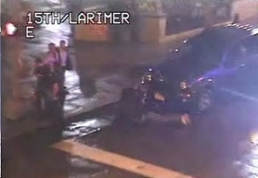

"I been forced to write my own laws, and you violated one in there. I just have to find you guilty of contempt of cop."
Bumper Morgan, Joseph Wambaugh's eponymous Blue Knight, justifying his brutal assault on a young man who had casually insulted him.
Jared Lunn, a 21-year-old volunteer firefighter from Brighton, Colorado, visited Denver's LoDo district to celebrate a friend's birthday. The evening was quite pleasant until Jared, who was carrying a pizza and minding his own business, was suddenly punched in the face and knocked flat by someone he had never met.
Shortly after the assailant scurried away the police arrived, and Jared's night took a pronounced turn for the worse.
Perhaps Jared was unaware of the axiom that it is never a good idea to ask the police for help.
Perhaps the fact that he is involved in a "public safety" role led Jared to assume that the police would treat him with courtesy and professionalism. In any case, Jared told Officer Eric Sellers that he had just been assaulted and that he wanted to press charges. Sellers told the victim to go home, and he wasn't impressed when Jared appealed to him as a fellow "public servant."
"Way to `protect and serve,'" muttered Jared in disgust as he walked away.
A violent assault on a mere Mundane is a trivial matter -- but this was a clear-cut case of "contempt of cop," and it could not go unpunished.
Sellers seized Jared and threw him to the ground. While screaming a steady stream of profanities at the terrified young man, Sellers beat him and applied a vicious choke hold. After Jared's body went limp, Sellers wrenched his hands behind his back and handcuffed him with such violence that the victim wouldn't have full use of his hands for a week.
This felonious assault took place in the presence of two other police officers who, in keeping with the oath-bound discipline of their brotherhood, refused to intervene.
"This guy [Sellers] does this all the time," one of the bully's comrades told Chris Fuchs, an eyewitness to the November 23, 2008 assault, after Jared was released. "We don't know how he gets away with it." The obvious reply would be: "He gets away with it because of the guilty collaboration of `good cops' like you."
 |
| "Street justice" in Denver's LoDo district. |

Two months later, Sellers became annoyed with a young man named John Crespin,whose behavior struck the officer as "nosy." Sellers pulled up into the driveway of John's home and ordered the young man out of the car.
As John complied, his shoulder brushed lightly against Sellers's arm. Infuriated that a Mundane had defiled his sanctified personage through incidental contact, Sellers inflicted a dose of summary "street justice" as an act of ritual purification.
Just as he did to Jared Lunn, Sellers put John in a chokehold while spitting obscenities in his face. After handcuffing the victim, Sellers used his police baton to lift the young man a couple of feet from the ground, then dropped him face-first into the driveway. The representative of the Denver city government's punitive priesthood dragged the bloodied man off the pavement, draped him over the hood of his police car, and administered the laying on of hands.
"He started punching me in the sides while I was already handcuffed," Crespin later told the local NBC affiliate. "I told him to quit, quit, and he wouldn't quit. He did it one more time and he grabbed my face and said, `Who the f*** do you think you are?'"
After being beaten into a lumpy mess, John Crespin -- despite the absence of a criminal history -- was charged with "felony menacing." Terrified and worried about being separated from his newborn child, Crespin accepted a plea bargain agreement that resulted in probation.
Sellers was later found to have used "inappropriate force" against Jared Lunn. The same review found that the officer had compounded that offense through the "commission of a deceptive act" -- that is, lying to internal affairs investigators. According to the Denver PD's existing disciplinary guidelines, this is cause for "presumptive termination." Yet Sellers continues to draw a paycheck as a member of the police force afflicting Denver.
In fact, Sellers -- who, according to his colleagues, commits criminal assaults against innocent people "all the time" -- complained in a court filing that the disciplinary action against him was "excessive," because it specified that another episode of that kind would result in immediate termination.

This isn't surprising, given that in September 2008 -- just weeks before Sellers assaulted Jared Lunn -- the Denver police union distributed t-shirts to its members depicting a baton-wielding riot cop rising ominously about the city's skyline.
"We get up early, to BEAT the crowds," gloated the inscription. Each member of the Denver PD received one of the commemorative t-shirts, which were created in anticipation of the 2008 Democratic National Convention.
Sellers apparently perceived that ill-advised pun as a directive and took it to what passes for his heart. Interestingly, Sellers owes his continued employment to a figure who played a critical role in the militarized security preparations for the 2008 convention: Ron Perea, who until recently was Manager of Safety for the City of Denver.
Perea was the Secret Service Special Agent in Charge during the 2008 Democratic National Convention. His previous experience included a stint as head of the Denver Field Office for the Secret Service, a position on the executive board of the FBI's Joint Terrorism Task Force in Los Angeles, and five years on the Albuquerque Police Department.
It's difficult to imagine someone whose career offers a better core sample of contemporary law enforcement at all levels. So it's quite significant that Perea, as Safety Manager, defined his job in terms of protecting the career prospects of abusive police, rather than protecting the public. As Safety Manager, Perea had the final say regarding complaints of excessive force. His decisions reflected an obvious desire to placate the demands of the police union, rather than holding abusive cops accountable for their offenses.
Perea resigned his post on August 31, barely three months into his $152,000-a-year job, because of rising public disgust over his handling of several recent episodes of criminal violence by the Denver PD. In addition to the leniency he had displayed toward Sellers, Perea refused to discipline Officer Devin Sparks, who severely beat Michael DeHerrera on a LoDo street corner in April 2009.
DeHerrera's friend, Shawn Johnson, had been ejected from a local club after an altercation with a bouncer. When the police arrived, they "arrested" Johnson so violently that DeHerrera made a frantic phone call to his father, Pueblo County Sheriff's Deputy Anthony DeHerrera.
"They're beating up Shawn -- what do I do?" a panicked Herrera asked his father. This apparently is what provoked Sparks to blind-side Herrera, slamming him to the sidewalk and repeatedly beating him with a leather-shrouded metal club called a "sap."
This much is captured by one of the Panopticon-style High Activity Location Observation (HALO) cameras scattered throughout that section of Denver. However, just as Sparks lays into Hererra, the camera -- which was operated by a Denver PD officer in real time -- suddenly pans up and away from the scene.
Detective John White, a spokesman for the Denver PD, insists that this wasn't an Orwellian "rectification" in real time, but rather a result of a camera following a pre-set program. Whether or not this is true, there is compelling evidence that Sparks and his partner, Corporal Randy Murr, took immediate action to cover up the crime. That evidence, interestingly, comes from an unimpeachable law enforcement source -- Deputy Anthony DeHerrera, who overheard the officers via his son's still-active cell phone.
"The last thing we [the elder DeHerrera and his wife] heard was, `We've got to get rid of the phone, they're recording us.'" The phone went dead -- leaving Michael's parents to wonder if the same was true of their son.
After being beaten unconscious, DeHerrera was charged with "resisting" and "interfering" with the officers, but those charges were eventually dismissed.
***
***
The official report filed by Sparks claimed that as Corporal Murr was detaining Shawn Johnson, DeHerrera "was about 1 ft. away and began yelling and screaming at the officers. I advised him numerous times to get back and he refused. I then attempted to detain the defendant at which time he tensed up, made a fist and bladed his body. He then spun to his left attempting to strike me in the face with a closed right fist. I then took him to the ground where he attempted to strike me again...."
In his analysis of the video and other evidence, Richard Rosenthal, Denver's Independent Police Monitor,concluded that the beating was an unwarranted act of violence and that the report filed by Sparks and Murr was "pure fiction."
"In fact, the video shows that the complainant [DeHerrera] did not make any aggressive moves toward [Sparks]," wrote Rosenthal in his review of the case. "Although the complainant was not complying with [Sparks's] orders to get on the ground, the complainant did not make any attempt to strike [Sparks], either before being taken to the ground or upon being taken to the ground." In fact, as Rosenthal observes, the reports filed by Sparks and Murr were completely untainted by the truth.
Perea, claiming that unspecified "witness testimony" substantiated the claim that DeHerrera had threatened the officers, insisted that the "totality" of circumstances justified the beating.
Despite finding Sparks and Murr guilty of falsifying official reports, Perea claimed that they were guilty of "inconsistencies" and "misperceptions," rather than "`willful, intentional, or knowing deception,'" and thus weren't subject to summary termination.
Rather than cashiering the perjurious police officers, Perea merely suspended them three days and "fined" one of them the equivalent of three days' pay. In a footnote to his summary, Rosenthal notes that one of the officers (most likely Sparks) "received more serious discipline because that officer had a prior disciplinary history."
In other words, he was a recidivist and proven perjurer. Nonetheless, Perea perversely insisted that he was still qualified to prowl the streets of Denver armed with various implements of violence and clothed in the supposed authority to inflict lethal violence on anyone who refused to comply with his whims.
Shortly before Perea's resignation, video footage surfaced of another police beat-down as summary punishment for "interference and resistance," this one involving a hapless pedestrian named Mark Ashford.
| A Denver cop strikes a pose after he and a boyfriend beat up pedestrian Mark Ashford. |

While walking his dogs in downtown Denver last March 16, Ashford saw an officer pull over a motorist for supposedly running a stop sign.
Acting out of a commendable civic concern, Ashford tapped on the windshield and told the driver he'd be willing to testify that the motorist had actually come to a full stop. This provoked the officer to demand that Ashford provide ID -- a spurious, vindictive, and unwarranted order.
Ashford complied, and then quite sensibly began to record the incident with his cellphone camera. This prompted the heroic officer to call for backup. The two tax-fattened bullies -- later identified as Officers John Diaz and Jeff Cook -- then shoved the slightly built pedestrian up against a bridge railing, repeatedly punching him and trying to steal the camera.
After beating Ashford into submission, the officers left him handcuffed in a crumpled heap. After being booked on spurious charges -- which were immediately dropped -- Ashford was hospitalized with a concussion and a cut over his right eye.
Seeking to placate growing public concern regarding criminal assaults by Denver police, Chief Gerald Whitman told the local NBC affiliate that "the police department is under control" and that it actually receives fewer use-of-force complaints than departments in most other major cities.
Jared Lunn, who eventually settled his lawsuit against the department, offers a different view.
"Denver police, to me, are basically criminals with badges," he told the Denver Post. "I have no respect for them [and] I somewhat fear them...."
Oddly enough, both Whitman and Lunn are correct: The militarized criminal syndicate called the Denver Police Department is not measurably worse than its counterparts in most major U.S. cities.
Video Extra: My New Anthem ...
Once again: Thank You
My deepest and most heartfelt thanks to all of you who have been so generous to me and my family over the past two weeks. As time permits I will express my gratitude to each of you personally, but I want to take this opportunity to let you know how much we appreciate your help. God bless you!

Be sure to tune in each Saturday evening from 8:00-11:00 Mountain Time for Pro Libertate Radio on the Liberty News Radio Network.
Dum spiro, pugno!
48 comments:
...his shoulder brushed lightly against Sellers's arm. Infuriated that a Mundane had defiled his sanctified personage through incidental contact...that is great love the tone what is scary is that some cops probably feel that way. Letting cops think they are above the law and can do whatever they want is a bad idea.
Thought you may find this of interest.
Cops Taser Old Man For Refusing Ambulance
http://www.youtube.com/watch?v=s8sArlo-Scw
It's getting out of hand. :-(
The day fast approaches where we mundanes will do more than brush against their shoulder.
I also wonder how often they intentionally go after those who look like they don't know how to or can't fight back. Sadly acting in self-defense against a "peace" officer automatically turns the officer into the "victim" and repercussions are almost inevitable. Don't forget Ruby Ridge.
Great work again, and as usual, Will. But you should take a look at a DPD 'officer' named "Bini" as well.
He's a legend when it comes to licensed murder, most famously for the case of Ishmael Mena a few years back, when he and other Armed Car Thieves in Blue* burst into the wrong home and killed the man armed with a Coke can. Stories in the Post credit Bini with as many as five such homicides, and quite a few paid vacations as a result.
PS> I refer to them as "Armed Car Thieves in Blue" because of their OTHER proclivity from that era, which was associated with Denver's infamous "Nuisance Law", which allowed them to confiscate BOTH the firearm and the vehicle of anyone they could catch with a gun in their glovebox. (The Colorado Constitution calls it acceptable, but Denver don't need no stinkin' Constitution!.) Another long story...
The REFLECTED power the types featured bask in will not last forever. Think nazi guards at the concentration camps and what was done to them by the inmates that were able when the reflected power of the nazi regime had been lost.
Of course, the types featured in this post are too ignorant and mean spirited to comprehend that what they have sent around has infuriated so many that what comes around will not be pleasant to them when it does (a good thing) and will result in true justice being served (another good thing).
The day will come when the present hunters become the hunted...to the point of extinction.
Ditto GunRights4US and Kirk's sentiments. I have a feeling that the Fat Blue Line Gang already knows that its days of being able to maraud with impunity are numbered.
Prediction: We're within only a few months (or maybe even a few weeks) of witnessing a major act of "blow back", maybe even something on a 9/11 scale, against the police state. By whom, where, and exactly when is anybody's guess, but as socioeconomic deterioration accelerates and as the FBLG becomes more brazen in displaying its role as the protector/enforcer arm of the oppressor class, some mundane somewhere with nothing left to lose is going to take matters into his or her own hands. I'm only surprised that it hasn't happened already.
Sadly, any such act will result in an immediate backlash of the type launched by the fedgov in the wake of 9/11, if on a smaller scale. I don't think it's an exaggeration to imagine domestic redux of a Lidice, Oradour Sur Glane, Kondomari, or My Lai.
Again, this is one of those predictions in which I pray to God that I'm wrong, but events lead me to no other conclusion.
Another great post, Mr. Grigg!
Denver being my hometown, I could go on and on about the out-of-control behavior of cops around here. But it's the same everywhere.
By disposition, immunity and armament the police constitute an abusive standing army the likes of which the founders would find quite familiar - and repulsive. It's a shame we've allowed things to deteriorate to this point - particularly since it would not have been possible without the approval of many so-called conservatives.
There is a site I commend to everyone - www.injusticeeverywhere.com - which does yeoman work documenting the widespread criminal behavior of the police across America. His documentation is careful and his statistical studies are impressive. (Interestingly, Pro Libertate is linked from his site.)
I agree with other comments here that the table will soon turn against the predators in blue. They have no-one to blame but themselves, and my only sorrow is that the correction didn't come before it got this bad...
When the masses have finally had enough, stand up and yell stop it!
Hopefully it will be at the ballot box and not in the streets. They only real way we will ever correct the path law enforcement is this country is on is to completely vote out everyone in offices all across this land. from DC to the smallest city council.
But sadly, I think its far more likely that we will all win the powerball tonight than for the other to happen.
So I too feel the day is coming when the public will take a stand against the criminal element that pollutes our law enforcement agencies. And when it happens it will be a violent clash, good vs. evil.
And I guarantee that once the rebellion starts every single cop in America will scratch their heads in amazement and wonder just what has set the public against them.
They are ignorant to what they do, either that or they are just criminally stupid.
GunRights4Us,
Some day? Not hardly. Would you have shot them if you were there? If not, why not? Because you'd still be waiting for that "someday."
I can't wait for the day that the 95% of good cops refuse to go to work. The people on this blog will be the first to curl up in the fetal position and crap themselves.
Anonymous said... "I can't wait for the day that the 95% of good cops refuse to go to work. The people on this blog will be the first to curl up in the fetal position and crap themselves."
These profoundly condescending words likely come from the mouth a of a cop, and obviously not an honest one.
If that day ever comes, we'll be fine. You see, over time Acton's dictum ("...power tends to corrupt, and absolute power corrupts absolutely...") has played out in American law enforcement to just about the fullest extent possible, and at this point if 95% of the good cops didn't show up for work, we'd be 19 short of a full shift, nationwide.
Who'd even notice??
Now, if we could figure out how to get 95% of the crooked ones to stay home, THAT would be real progress!
Your anonymous condescension doesn't impress. Bottom line: I still say it's you guys who'll need the Depends...
Just what we've always wanted, more action on the part of local Gestapos disguised as local police.
Waxing entirely serious for a moment, here's another great read on this issue: http://www.constitution.org/lrev/roots/cops.htm">Are Cops Constitutional?
Here's an excerpt: "Law enforcement in the Founders' time was a duty of every citizen.32 Citizens were expected to be armed and equipped to chase suspects on foot, on horse, or with wagon whenever summoned. And when called upon to enforce the laws of the state, citizens were to respond "not faintly and with lagging steps, but honestly and bravely and with whatever implements and facilities [were] convenient and at hand."33 Any person could act in the capacity of a constable without being one,34 and when summoned by a law enforcement officer, a private person became a temporary member of the police department.35 The law also presumed that any person acting in his public capacity as an officer was rightfully appointed.36
Laws in virtually every state still require citizens to aid in capturing escaped prisoners, arresting criminal suspects, and executing legal process. The duty of citizens to enforce the law was and is a constitutional one. Many early state constitutions purported to bind citizens into a universal obligation to perform law enforcement functions, yet evinced no mention of any state power to carry out those same functions.37 But the law enforcement duties of the citizenry are now a long-forgotten remnant of the Framers' era. By the 1960s, only twelve percent of the public claimed to have ever personally acted to combat crime.38
The Founders could not have envisioned 'police' officers as we know them today. The term "police" had a slightly different meaning at the time of the Founding.39 It was generally used as a verb and meant to watch over or monitor the public health and safety.40 In Louisiana, "police juries" were local governing bodies similar to county boards in other states.41 Only in the mid-nineteenth century did the term 'police' begin to take on the persona of a uniformed state law enforcer.42 The term first crept into Supreme Court jurisprudence even later.43
Prior to the 1850s, rugged individualism and self-reliance were the touchstones of American law, culture, and industry. Although a puritan cultural and legal ethic pervaded their society, Americans had great toleration for victimless misconduct.44 Traffic disputes were resolved through personal negotiation and common law tort principles, rather than driver licenses and armed police patrol.45 Agents of the state did not exist for the protection of the individual citizen. The night watch of early American cities concerned itself primarily with the danger of fire, and watchmen were often afraid to enter some of the most notorious neighborhoods of cities like Boston.46
At the time of Tocqueville's observations (in the 1830s), "the means available to the authorities for the discovery of crimes and arrest of criminals [were] few,"47 yet Tocqueville doubted "whether in any other country crime so seldom escapes punishment."48 Citizens handled most crimes informally, forming committees to catch criminals and hand them over to the courts.49 Private mobs in early America dealt with larger threats to public safety and welfare, such as houses of ill fame.50 Nothing struck a European traveler in America, wrote Tocqueville, more than the absence of government in the streets"
I debated editing out those annoying footnote numbers, but decided to leave them in to show how well the author documented this work. This is the kind of research it will take to force cops back into a respectable place in society, if it's possible at this late date. (And I would note that their respectable place may danged well be no place at all!)
Read it. Spread the word!
Copied and pasted without testing, and inadvertently included the blogger link text.
Here's the address that works: http://www.constitution.org/lrev/roots/cops.htm
Fireplaceguy, you are the one I am being condensending to. When you make statements like "Its the same everywhere" would indicate that you have been everywhere and experienced everything in this country. It is the ignorance of people like you that will cause the down fall of this country. You are seemingly incapable of reasonable thought. And not a cop, just an American who will not lay down and let people like you spew your venom without calling you on it. And stating that I must be a cop is no different than me stating you must be a criminal. I can't possibly know that because I do not know you.
Anon@ 9:19,
Is human nature different where you live?
Did you guys hear Will Grigg's September 04 radio show? The caller Maggie from Pennsylvania 73% through hour two sure made a fool of herself. Check it out, I don't want to spoil it.
But it shows something very important to us...
Did you guys hear Will Grigg's September 04 radio show? The caller Maggie from Pennsylvania 73% through hour two sure made a fool of herself. Check it out, I don't want to spoil it.
But it shows something very important to us...
Hey, Anon - Liberty isn't served AT ALL by turning a blind eye. What kind of American looks the other way in the face of massive abuse of power by the government? Hmmm??? What are you, anyway? No real Patriot settles for drinking the government Kool Aid - they look critically at what's actually happening.
Judging by your own words, you're the dupe being mocked on the Simpsons when C. Montgomery Burns says "a police state is a small price to pay for living in the freest country on earth" Go peruse the sites I suggested, starting with www.injusticeeverywhere.com... Read back, item by item, day by day, week by week, for at least several months. Then study the maps. Let's see if you can still assert that police brutality/corruption/abuse of power isn't a pervasive national problem.
And pull your head out. Nobody has to actually GO everywhere, let alone experience everything firsthand, when the evidence is so conclusive. (By your absurd rules, you actually exclude yourself from this debate, since you obviously do not meet your own criteria to be qualified to comment.)
Ironically, I was inspired to check back here when the radio news, at the bottom of the hour, recapped the firing of six Arvada, CO (suburb of Denver) cops over the use of excessive force. Three of the six were the perps, the others lied to protect them.
The only noteworthy aspect of this is that there was some limited accountability for their wrongdoing. It didn't say they all went to prison for it, which is what would happen to you or I...
Anon, this is not an argument to win for winning's sake. There's are ugly truths out there, which you should seek for our country's sake. It's not just for us, but for future generations that we need to do this heavy lifting.
If you're not up to the task, well, may you enjoy the bitter taste when you crouch down and lick the hands which feed you. May your chains sit lightly upon you, and may posterity forget that you were our countryman.
WOW, Just came across this site. I am a cop. Just want you all to know that there are a fair number of very good, honest and God fearing men and women that serve society. I left a career to begin one in law enforcement because I had and have the same concerns that any of you seem to have about our society.
Our consitutional rights come first. If a criminal gets away, thats the way it goes. The power that police officers have is heavy. If it is not handled with honor and integrity everyday, it can be dangerous for the officer and the public.
Since law enforcement will never go away unless our country completely crumbles, it is up to all of us to protect our freedoms. It is my feeling that the way to do that is to become involved. I took a 50% cut in pay to put my money where my mouth is. Making threats to wipe out all cops serves no realistic purpose. One thing it does do is detours some good people from becoming police officers. Much like we have detoured many good people from becoming elected officials. Painting entire groups with one big brush never serves a society well. We are all individuals.
There is corruption in every part of the human existence. Law enforcement is no exception. There are also great people. Thankfully good people out number the corrupt or else we would not have this great county.
I will not be staying with this discussion as I just happened upon it but I wanted to let you know, the power of your words can do much good or evil. We have to be as careful with our words as a cop has to be with his or her authority and power
anon @ 9:19 - "people like you spew your venom"
Every blog on the internet has someone accusing someone else of "spewing venom." Don't you have a thesaurus?
Anonymous (who said WOW) -- what you miss is that you cannot be a decent man and be a cop at the same time. The reason for that is very simple: what you get as your paycheck is extorted, under the threats of violence and kidnapping (aka imprisonment) for those who don't want to pay you for your "services". And the cops, you included, are the people who do the intimidation and occasionally beat up people who dare to refuse.
If a party without "official" suits would do that, they'd be rightfully considered robbers and racketeers. When EXACTLY THE SAME thing is done by the cops, well...
Any person who is not completely brainwashed understands that a robber is a robber - in uniform or without.
So the only thing a decent cop can do is to quit. If he wants to protect other people, there's a plenty of opportunities in private security business.
We have to be as careful with our words as a cop has to be with his or her authority and power
"We" are under no such obligation whatsoever. Your comparison is one of apples to rocks. We mere mundanes have NO power to rob, maim, and kill with words that cops have with weapons, mass firepower, and a "justice" [sic] system stacked in their favor. That aside, exhortations to "be careful with your words" are a gentle threat that is the hallmark of those representing an incipient (or established) police state, where it is expected that one may only whisper words of dissent or dissatisfaction to only the most trusted of friends or family --and that with great trepidation-- for fear of arrest, or worse.
I am a cop. Just want you all to know that there are a fair number of very good, honest and God fearing men and women that serve society.
Of course there are. They're just not "serving society" by wearing a government-issued costume, carrying a tin badge that confers upon them the authority to commit violence against innocent people at will and with impunity, and collecting a paycheck consisting of stolen tax dollars. No, those "God fearing men and women that serve society" are doing so in the rapidly vanishing private sector, producing goods and services that people actually want and need and are willing to purchase (or not) voluntarily, with their own rightfully earned money.
(To be continued)
(Continued)
I left a career to begin one in law enforcement because I had and have the same concerns that any of you seem to have about our society.
Our consitutional rights come first. If a criminal gets away, thats the way it goes. The power that police officers have is heavy. If it is not handled with honor and integrity everyday, it can be dangerous for the officer and the public.
Since law enforcement will never go away unless our country completely crumbles, it is up to all of us to protect our freedoms. It is my feeling that the way to do that is to become involved. I took a 50% cut in pay to put my money where my mouth is. Making threats to wipe out all cops serves no realistic purpose. One thing it does do is detours some good people from becoming police officers. Much like we have detoured many good people from becoming elected officials. Painting entire groups with one big brush never serves a society well. We are all individuals.
I've heard this sort of blather far too often from less-than-honorable or honest cops and, quite frankly, it comes across as self-serving BS.
I'll ask you the same question I always ask anyone claiming to be an "honest" cop:
When was the last time you actively stepped in to stop one of your "brethren in blue" from committing a criminal act against a mere mundane (and don't tell me that you've never been in such a situation; that would be the biggest lie any "honest" cop could tell), or, alternatively, when was the last time you reported such behavior to your superiors and demanded that they rectify the situation, choosing to do the right thing by the citizens you purport to "protect and serve," even at risk of being branded a "snitch" or "rat" by your less-than-honest peers?
Answer this one honestly (and provide the readership here with specifics to back up your claim) and I'll believe the whole "I'm an honest cop" line. Otherwise, I'll consider you just another coptroll who is only slightly more literate and has a little bit more self control than the rest of his peer group.
The bar I set for "honest cops" to prove themselves as such is high - probably too high for you to meet. The fact that you seemed surprised at the vitriol that is the only natural and logical reaction of citizen-victims to the criminal violence that is becoming the norm in most police departments in this day and age and that is victimizing increasing numbers of us on a regular basis doesn't help your case either.
Liberanter:
You set a high standard indeed. But can you provide a list of what YOU consider to be a "criminal act"?
You can skip the obvious such as excessive force cases or blatant instances of perjury, etc. where those involved should be prosecuted and terminated by their employers.
The way your challenge reads leads me to believe that you think every cop in every town across this nation has illegally assualted someone, or witnessed such an assualt and did nothing to stop it.
Can you clarify?
Regards
Fred -
Liberanter is doing a fine job with this discussion, but I'll chime in with a few examples of my own:
Lying about probable cause in a traffic stop or search warrant affidavit.
Having a drug sniffing dog alert to a car the handler or another officer deliberately contaminated with drug odors from drugs they carried for just such events.
Using ANY force at all on people who aren't resisting.
Using excessive force on people who are resisting.
Beating people for the sheer joy of beating them, even after they're in custody.
Planting evidence.
Misleading testimony, making events sound more serious or different than they actually were. Then, of course, there's outright lying on the stand.
Ignoring/withholding exculpatory evidence.
Ignoring/concealing the crimes of fellow officers.
Perhaps most egregious of all are current interrogation/investigation practices. I don't know that any of it is criminal per se (it should be!) but there is no doubt that these practices have led to the imprisonment and even execution of many many innocent people. Now, a few here and there are being freed, but only after spending years behind bars for crimes they didn't commit.
It would be nice if each and every victim of police misconduct/criminality would sue. In short order, most municipalities would become un-insurable due to excessive claims. Then the bad behavior would screech to a halt, without necessitating a civil war. (That would be a most welcome alternative to the path we're on...)
I sure didn't start out thinking this way. In my 20's, I was friends with several cops who shot competitively in the same matches I entered. Rode along, multiple times, with more than one of them. Now, in my 50's, I avoid them like the plague. They're not the same. I know all about the testing done to eliminate the intelligent candidates from the hiring pool these days. I know all about them being trained that the Constitution is just an impediment to good police work rather than a document to be revered, and all about the tricks they use to get people to give up their rights.
I know all about their attitude toward us "civilians" or "mundanes" and all about their perception of themselves as elite and exempt. And, unfortunately, I understand that those perceptions are not misplaced. They ARE elite, and they ARE exempt from the rules we mundanes have to live by. Speed limits mean nothing to them, while we mundanes are milked for revenue by governments and insurers. Steroid use is rampant among cops. They routinely assault people without consequence, and perjure themselves as casually as you and I pour a cup of coffee in the morning.
I do understand that there are exceptions. Unfortunately for those exceptions, their main function these days is to prove the rule.
I really hope everyone reading this has read thoroughly at the links I posted earlier. As in so many other ways, it's later than you think...
Fred, I've got some examples of cops harming people for not committing crimes:
Arresting/fining someone for driving without a license. Arresting someone for peaceably carrying a firearm without a permit. Arresting someone for possessing/using a statutorially-unapproved chemical.
In other words, MOST cops harm innocent people for non-crimes all the time. A crime isn't merely something against which a legislature passes a statute. It's an act that in itself harms or violate the rights of other people.
A crime isn't merely something against which a legislature passes a statute. It's an act that in itself harms or violate the rights of other people.
Thank you, Sans Authoritas, for taking the definition of "criminal act" right off of my fingertips for Fred's benefit. Unless an act specifically harms the person, property, or rights of another, it does not meet the natural law definition of a crime. Indeed, most of the "laws" we see on the books today at the local, state, and federal level are statutes that meet the definition of "positive law." This term is best defined as (and I'm paraphrasing here) an act deemed a crime through legislation or executive fiat, but that does not necessarily cause harm to another person's body, rights, or property. Positive laws are usually passed in order to protect a special interest group or ruling elite's agenda or interests, NOT to protect private property rights or persons among the ordinary citizenry.
As for the examples Fred requests, I think you and fireplaceguy have hit several nails squarely on the head.
All great examples, fireplaceguy. Although I think a criminal prosecution would be more appropriate for most of your examples.
I certainly would agree with the law suit strategy you suggest so long as the suits were brought for violations of the state constitution rather than the U.S. (not a fan of the Incorporation Doctrine- call me old fashioned).
I do not dispute that there are many cops committing many crimes. What I have a hard time believing is that every cop in this country has either committed these deeds or has direct knowledge of them being committed by his co-workers.
But if a peaceful arrest of a person for possessing drugs is considered a criminal act, there is much work to be done with the legislators and their bird brained constituents who believe criminalizing possession of a plant is a good idea.
I certainly would agree with the law suit strategy you suggest so long as the suits were brought for violations of the state constitution rather than the U.S. (not a fan of the Incorporation Doctrine- call me old fashioned).
As I've stated before, my biggest problem with lawsuits against a government agency/agents is that any judgments awarded wind up costing innocent taxpayers money, not the actual defendants. If we could remove immunity from agents of the state who are found guilty of torts in civil court after it has been determined that they willfully exceeded their authority of office and knowingly violated the law, and could direct that restitution be paid out of their own assets, without a penny of "public" funds being involved, then I would be all for such suits. Until we can shift the burden away from taxpayers, however, the criminal thugs in the employ of the State have absolutely ZE-RO incentive to clean up their act. After all, it doesn't cost them a thing in terms of professional consequences or money to violate the law when a third party is ultimately on the hook for their torts.
Is there anywhere else to see the Paul Gilbert video now that it's been removed from YouTube?
What was so bad about it that it was removed, do you know?
Anon -- try this:
http://www.youtube.com/watch?v=x2QpzqlZfs8
Until we can shift the burden away from taxpayers, however, the criminal thugs in the employ of the State have absolutely ZE-RO incentive to clean up their act.
But that would put a hole in the "deep pockets" target that got us all in this law suit business in the first place. Most suits name so many people and agencies so that at least one of them has some cash to pay them off rather than pay the legal fees to take it to trial. Sometimes they get together and chip in, too.
Sick system.
Even if a so-called law enforcement agency fires a dirty cop and also attempts to prosecute him criminally, the agency will be named in the suit since THEY have the deep pockets (us). The agency will cry that the crooked cop was not acting under color of law, therefore the former cop is on his own. The lawyers hate when that happens because the former cop doesn't even have enough to cover the legal fees, let alone punitive damages.
For this reason alone I prefer a criminal prosecution. Sure, the burden of proof is more difficult to reach than that of a civil trial. Yes, the DA might be spineless or running for re-election. But at the very least he has been arrested for a crime, mug shot taken and finger prints rolled, and if the agency he works for drops him, he's footing the bill for his attorney. An informed jury can do the rest.
Of course all of the above depends on the varying levels of corruption of elected DAs in different regions.
Re: Law suits in general
Suing for a violation of rights guarateed by a state's constitution has become so undesirable because the damages (sums of money) are much lower. This encourages the lawyers to file them as violations of the US Constitution even though the agents who violated the citizen's rights were not employees of the federal Leviathan. A bad path to walk on, IMHO.
Cheers
Sans Authoritas - Your examples were better than mine. I agree with you completely about what should and what shouldn't constitute a criminal act. It's the old malum in se (wrong in and of itself) vs. malum prohibitum (wrong merely because it's prohibited) argument. An offense malum in se (theft, assault) would be wrong even if there were no law against it, whereas an offense malum prohibitum is not a legitimate affront regardless of statute. (Perversely, in malum prohibitum cases, the statute itself is generally the only affront.) Your example of carrying a gun without a permit is the perfect example of this - as the only moral wrong in the equation is prohibiting you from exercising your God-given right to self defense.
Fred - Thanks for the reply. I fully agree with you about the limited utility of lawsuits. I only threw the idea out because I would love to find an alternative to the path we're on now, which I'm afraid will lead to violence.
I don't believe every cop in the country has committed the crimes we're discussing, but I'd bet most have. I'd be stunned if there were any cops anywhere who didn't have direct knowledge of co-workers committing them.
Agreed on the drug issue as well. These laws are nothing more than price supports, and the moment they are removed, the price of all that stuff will plummet to the point where it's no longer worth fighting over and stealing for. Of course, the CIA would have to figure out something else to do for lunch money...
Liberranter - Agreed on the idea that these "public servants" should be individually liable. Ideally, the public would not be on the hook for a cent. Absent individual liability, I still prefer lawsuite to civil war. Just sayin...
Will - Many thanks for the ideas and the forum. I hope that part-time job came through for you!
Municipal, State, Federal, you name em, are gangsters writ large. The ultimate scam where those getting fleeced by these wolves keep bleating for more of the same. I have more respect for rent-a-cops and their agencies because they bid and contract freely with the parties desiring their services. The "official" ones have a gun to the collective public's head and constantly threaten to pull the metaphorical trigger through fear mongering or do so in fact on the streets. Any decent human being wouldn't touch these evil departments with a ten foot pole and most certainly should know better. The do gooders mentioned by C.S. Lewis curse us daily with their soul crushing "help" by interjecting themselves into every facet of our lives and at our ever rising expense.
The characteristics we judge police officers on represent continua rather than discrete states. Cops are brutal within a range from "not at all" to "Vic Mackey"; they are similarly fiscally corrupt, arrogant, and control freaks. There are very few at the extreme ends of those scales, either saints or monsters. Most fall in between, and statements like "most cops are good cops" is only true if you also say "when compared to the really bad ones".
Virtually every cop is a felon. If they haven't committed perjury, abused a suspect, committed brutality, planted evidence or whatever, they have witnessed another cop doing so or have acted to prevent prosecution of one of their "brethren". A failure to arrest cops who have committed felonies or to protect them makes them accomplices and accessories and just as guilty as the person who committed the crime.
The only possible exceptions are newbie recruits or those on such a small force they almost never come into contact with other police.
Those that we task with enforcing the law should be held to a higher standard than they hold we mere "mundanes". Anything they would investigate one of us for should be independently investigated when they are even suspected.
And, "internal affairs" is just a means of covering the crimes. We don't let the mafia perform their own investigations into their actions.
Temnota, glad to see you posting on this blog. I've enjoyed your rational posts on other blogs.
Gentlemen, you have it wrong. First we must go after the corrupt DA's and Judges. Until they hold the thugs in blue accountable nothing will change. Even if you can get a cop charged they are let off scott free. Once the upper echelon fears for their careers/freedom, they WILL reign in the street thugs.
The only possible exceptions are newbie recruits or those on such a small force they almost never come into contact with other police.
Is this statement based on personal experience? Or is it a theory of yours? I'm curious.
I used to think the cops out west were much more inclined to embrace freedom and rugged individualism. Boy, was I wrong (sigh).
My personal opinon is you're better off with a cop in any size department who has gray hair (or showing other signs of "maturing"), a wedding ring, and who does NOT begin a conversation with the command, "Let me see your hands".
The rookies and smaller town fellas frighten me the most....as if I needed to be frightened at all.
I think the a--hole cops in these videos are a waste of good breathing air and should be treated like rabid dogs. I have about as much respect for a--hole cops as I do a rat or a Muslim. Neither are very high on the popularity list. According to the videos, Denver, Co PD are as disgusting as the terrorists who beheaded their victims on camera. The difference between the terrorists and the cops, the terrorists didn't lie. The lying cops are a disgrace to the honorable men who do their job without lying and covering up the truth.
The day will come when this criminal standing army will find out that there are many more of us than of them. God help them when that day comes.
Liberranter, isn't it strange (not) that about 100% of "law enforcement" is spent on non-crimes and every legislature, fed and state, do nothing but pass non-crimes and setting the punishment for committing these "crimes" harsher than that for murder? Newt Gingrich spent a lot of his time trying to make having a certain amount of dope a death penalty crime. I think he tried it twice and a LOT of Congressmen supported such a bill, maybe 20 or 30.
Someone wrote my own Senator, Richard Shelby, asking for help with his son who was falsely imprisoned for life for a drug "crime." The person who accused him had recanted; there was even a TV show about it. Shelby wrote back that since drugs were such a serious crime that he supported long sentences, the longer the better. When Shelby's son was caught smuggling hashish into the country, he was fined $500 and received no jail time. Meanwhile, his innocent constituent is still serving a ridiculously long prison sentence for which there was not a single shred of evidence save a now recanted accusation.
But I don't think the people will ever rise up against the police state and non-criminal laws because white people especially love the police and the government. You wouldn't have to repeal a single drug law if jury after jury would just refuse to convict.
I think what will happen, if anything, is that the cops will turn on their masters, if, for instance, their masters try to take away one of their toys, (as they call them on their police forums) such as tasers. Since 9/11, when the War on Americans started, there have been about 500 taser deaths. (There were about four taser deaths before that.)
As the police get more murderous and monstrous, I thought the only thing that will get the attention of white America is if they kill a baby, but that ship has sailed with barely a whisper. I think Will has written about it, either on this blog or LRC. I've forgotten whether the cops were acquitted or the judge refused even to try them, but there is a photo of them high-fiving each other for getting off scot-free for shooting a 19 month-old baby.
As I've stated before, my biggest problem with lawsuits against a government agency/agents is that any judgments awarded wind up costing innocent taxpayers money, not the actual defendants.
That is why the awards should be restitution from the offender. First his money, his house, his pension, then his freedom. He should be made the slave of the victim. ...or to quote a Knight's Tale, "and if he cannot pay?" "Then we shall take it from his flesh."
I am also a proponent of caning such offending officers in public and letting the victim perform the caning, especially as so many of the police's crimes are physical.
Here's more fodder exposing the dehumanizing antics of our "guardians".
http://www.backwoodshome.com/blogs/BehindTheScenes/
Dave P. said...
I also wonder how often they intentionally go after those who look like they don't know how to or can't fight back."
Dave, Did you know that American police forces are now being trained by Israelis?
Does it make more sense now that they go after the defenceless?
That's the Israeli's MO - attack only those who can't or won't fight back.
Conflating corrupt cops to "militarized police" is quite a jump in conclusion.
Post a Comment